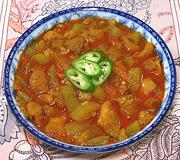

|
Chicken with Opo GourdBurma - Kyethar Buthee | ||||
| Serves: Effort: Sched: DoAhead: |
5 w/rice *** 1-1/2 hrs Yes |
This Burmese country curry is truly wonderful. Burmese curries are quite different from both Indian and Thai curries. This one produces a fair amount of liquid to wet steamed rice. | |||
| In Burma this recipe is also made with more liquid and served as a soup. See also Comments. | |||||
|
1 1 ------- 1/2 1/2 2 1/2 ------- 8 4 3/8 5 ------- 3 2-1/2 ------- |
# # --- t t T T --- oz cl in --- T c --- |
Opo Gourd (1) Chicken meat (2) -- Marinade Turmeric Paprika Fish Sauce (3) Salt -- Purée Onion Garlic Ginger Root Chili, fresh (6) ----------- Oil Water -- Serve with Jasmine rice, |
Prep - (35 min)
|